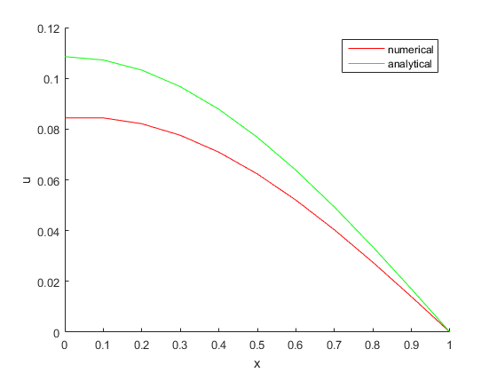
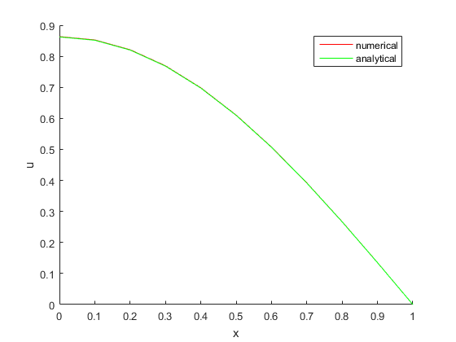
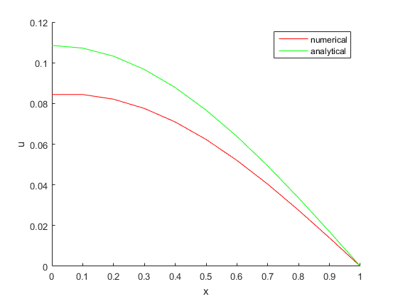
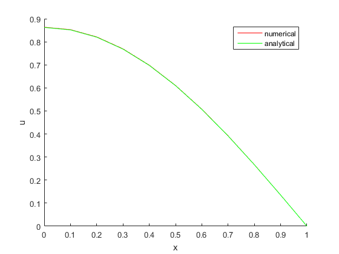

HW 2.6.4
Contents
Neumann-boundary-value Problem
Numerical Solution
Using
f_ = @(x)(cos(pi * x / 2)); a = 0; b = 0; nu = 1;
In domain , let , , a.k.a ,
dx = 0.1; dt = 0.004; T = round(1 / dt); X = round(1 / dx); x = 1; t = 1; M = x * X; N = t * T;
Let
r = nu * dt / dx / dx;
Setting domain and boundary value
x_ = 0 : dx : 1; t_ = 0 : dt : t; [X_, T_] = meshgrid(x_, t_); % Analytical Solution u_exact = cos(pi * X_ / 2) .* exp( (-pi * pi * nu / 4) * T_); %0-th order va = [0, (-r) * ones(1, M - 2)]; vb = [1, bsxfun(@plus, ones(1, M - 1), 2 * r)]; vc = [0, (-r) * ones(1, M - 2)]; fvd = @( u )( [ u(2), u(2:end) .* [1 + r, ones(1, M - 2)] ] ); u_1 = solver_2_6_4( va, vb, vc, fvd, u_exact ); %1-st order va = (-r) * ones(1, M - 1); vb = [1, bsxfun(@plus, ones(1, M - 1), 2 * r)]; vc = [-1, (-r) * ones(1, M - 2)]; fvd = @( u )( [0, ones(1, M - 1)] .* u ); u_2 = solver_2_6_4( va, vb, vc, fvd, u_exact ); % %2-nd order va = (-r) * ones(1, M - 1); vb = bsxfun(@plus, ones(1, M), 2 * r); vc = [-2 * r, (-r) * ones(1, M - 2)]; fvd = @( u )( u ); u_3 = solver_2_6_4( va, vb, vc, fvd, u_exact );
max error = 0.007588 when t = 0.06, max error = 0.005873 when t = 0.10, max error = 0.006732 when t = 0.90, max error = 0.003894 max error = 0.047393 when t = 0.06, max error = 0.035225 when t = 0.10, max error = 0.040744 when t = 0.90, max error = 0.024139 max error = 0.002561 when t = 0.06, max error = 0.000886 when t = 0.10, max error = 0.001339 when t = 0.90, max error = 0.001685
  
 